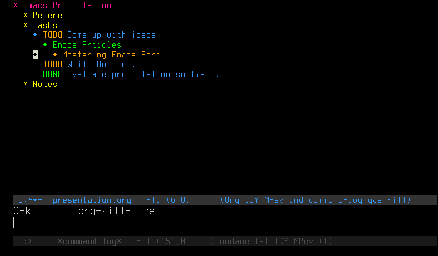
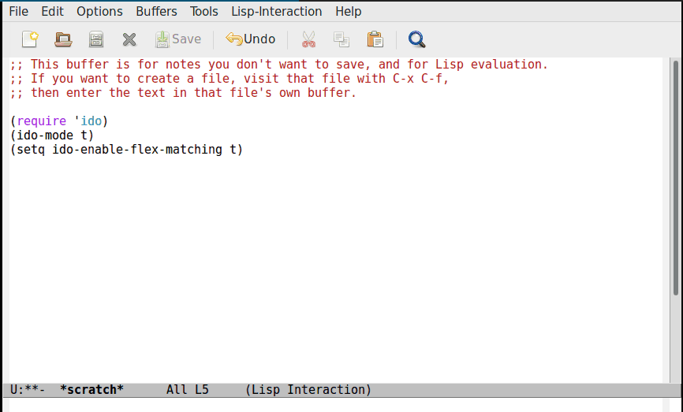
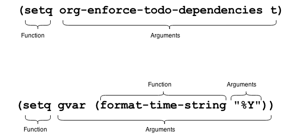
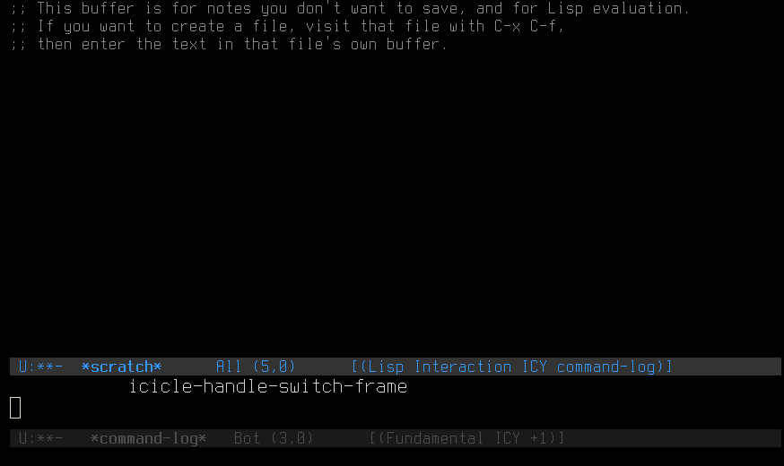

Things You Can Do With Emacs
If you are developing a new product, a great way to reach developers is to create an Emacs package for it. -- The Internet.
About Me
- I work with automation.
- I like automating my personal workflows.
- Emacs is a great front end for all types of things.
This Talk
- Is available online at mattjbarlow.github.io/emacs.
- Goes from basic configuration to writing your own functions.
Emacs Startup

- Use
init.elor.emacsfor emacs customizations. - Use
~/elispfor your own customizations. - Use
~/gitfor packages not available through ELPA.
Common Init Changes
- Emacs Variables
- Package Variables
- Hooks
- Custom Functions
Initializing Emacs Variables
Initializing Package Variables

Describing Variables
C-h v

Setting Key Bindings
Setting Hooks

Writing Custom Functions

Describing Functions
C-h f
Beginning Elisp
eval-bufferandeval-regionis your friend.- Just beware of the global namespace.
Eval Region
M-x eval-region
Emacs Packages
- GNU ELPA
- MELPA
- Marmalade
GNU ELPA
- FSF Sanctioned Emacs Packages
- The Default Repo
- Some Signed Packages
- HTTP Only
MELPA
- Most Popular Repo
- Packages Maintained by Owners
- No Signed Packages
- HTTP Only
Marmalade
- Lots of overlap with MELPA
- Packages Maintained by Anyone
- No Signed Packages
- HTTPS Only
Setting Repos
Installing Packages
M-x package-list-packages

Customizing Appearance
Fonts - Describe Char
M-x describe-char
Fonts - Show Available Fonts
M-: (print (font-family-list))
Fonts - Testing
M-x set-frame-font

Initializing Fonts
(set-default-font "Terminus 10")
(add-to-list 'default-frame-alist '(font . "Terminus 10"))
(setq initial-frame-alist default-frame-alist)
Backups
- Keep Versions
- Install Backup Walker
Backup Versions

Backup Version Directory
Backup Walker
M-x backup-walker

Themes - Initializing
M-x load-theme
;; Optional (add-to-list 'custom-theme-load-path "~/git/cyberpunk-theme.el") ;; Required (load-theme 'cyberpunk t)
Key Bindings
- Every key binding is a function.
- Write your own pneumonic key bindings.
- View available key bindings.
Key Binding Help
C-h k
Setting Key Bindings
Mode Key Bindings
C-h m

Navigating Faster
goto-lineC-Prefix ace-jump-modeC-u C-SPC to jump back
C-1-0-pM-g g
Moving Around

Macros
F3 or C-x (to startF4 or C-x )to end and execute- Powerful because they work across all Emacs
Macros Demonstration
F3 or C-x ( to startF4 or C-x ) to end and execute

Text Registers
- Pin text to a number.
Text Registers
Save:C-x r s 1Insert:
C-x r i 1
Window Registers
- Pin window layout to a number.
Window Registers
Save:C-x r w 1Restore:
C-x r j 1
Bookmarks
- You can bookmark any position in any file.
- Bookmarks are nice because, unlike registers, they have names..
Bookmarks
Set:C-x r mJump:
C-x r b
Dired
- Emacs File Explorer
Dired - Accessing and Movement
Move up and down:p nMove up directory:
^

Dired - Marking Files
Mark files:mMove (rename) files:
R
Dired - Open Other Window
C-o
Dired - Byte Compiling
Mark files:mByte compile:
B
Dired - Diff Two Files
=Dired - Customize ls options
C-u s
Dired - Finding Files
find-name-diredfind-grep-dired% g
Dired - Finding Files
% g
Magit
If you are using Emacs you should check out magit which is one of the best if not the best git tools out there. — elpix
Magit is the only git client where I can be faster than on the command line. great stuff. — tenpn
Status
M-x magit-statusBranching
Create branch:b cDiff with Master
d ReturnStage changes
sCommit
Bring up commit window:c cCommit message:
C-c C-cPush to remote branch
P PGetting help
hOrg-Mode
- Supreme Information System
Org-Mode - Outlining
C-x C-f FILENAME.orgOrg-Mode - Narrowing
Narrow:C-x n sWiden:
C-x n w
Org-Mode - Tables
|- TABOrg-Mode - Links
Store link:C-c lMake link:
C-c C-lOrg-Mode - Code Snippets
#+BEGIN_SRC go#+END_SRC goOrg-Mode - Exporting
Export as html and open:C-c C-e h oOrg-Mode - Capturing
C-c cEmacs Tab Completion
- ido-mode
- Icicles
Emacs Tab Completion
Emacs Tab Ido
Emacs Tab Ido Uniquify
Icicles Progressive Narrow
Shift-SpaceIcicles Regex Completion
Shift-TABIcicles Preview Files
Ctrl-ReturnSupercharge modifiers
xcape -e 'Alt_R=Control_L|period;Shift_R=Alt_L|slash'
- Modifier keys can perform an action when pressed alone.
- Use xcape for Linux or Karabiner for Mac.
- Enables super fast access to common functions.
Snippets and Templates
Yasnippet Startup
(yas-reload-all) (add-hook 'org-mode-hook #'yas-minor-mode)
Custom Templates
Just Enough Elisp
Just Enough Elisp
- Functions in emacs are composed of other functions.
- Almost all of Emacs is powered by Elisp, except for a few C primitives.
- Symbols can be both a function and variable at the same time.
- How they are evaluated depends upon their position.
- Use
C-h fandC-h vliberally.
Quoting Symbols
Quoting Demonstration
Just Enough Elisp
- Elisp evaluates from the inside out and left to right.
- Functions return values and perform side-effects.
- Type checking is done with functions like
number-or-marker-p. - Use
letfor local variables within your functions.
Arithmetic and Type Checking
Equality
Control Flow
progn
- Causes one or more side-effects to occur, and returns a value
Vectors
Defining Your Own Functions
- Every action you perform in Emacs is a function.
- All functions you will write are comprised of other functions.
- Use the *scratch* buffer and
C-jto iterate.
Greeting Function
gorun Function
One Last Snippet
- Emacs is single process and single threaded.
- You can, however, spawn new processes and watch them.
- These watchers are called sentinels.
Processes and Sentinels
The End
- Thank you!
- Check out more resources on mattjbarlow.github.io/emacs
- There are command references and key bindings for every slide.